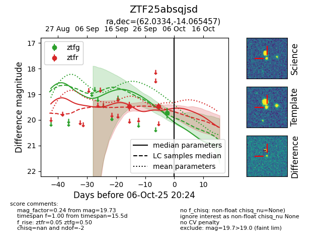
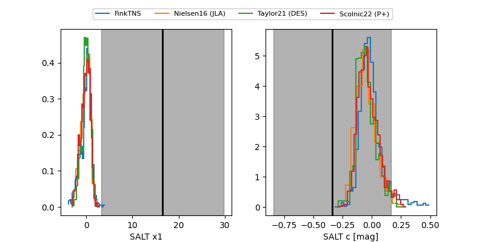

FINK: ZTF25absqjsd
Lasair: ZTF25absqjsd
ALeRCE: ZTF25absqjsd
ZTF25absqjsd (ztf,fink)
equatorial (ra, dec) = (62.0334,-14.06546)
galactic (l, b) = (207.2620,-42.47099)


last ztfg=19.73, ztfr=19.48
1 ztfg, 2 ztfr detections